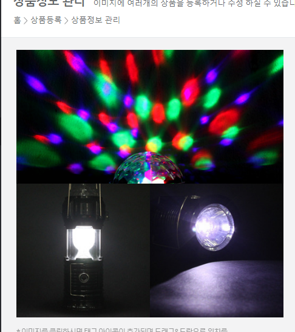

사랑하는 우리 도토리 너무나 사랑해요 사랑하는 여보야 언제오는거야? 나는 정말 열심히 공부를 하고 있는데 여보는 오지를 않고 겨울이는 잠깐 나보러 나왔다가 다시들어가 버렸고 나는너무 배가 고픈 나머지 몸무게를 재보니 73.8kg 이길래 괜찮겠지 하고 라면을 먹어 버려서 지금 조금 후회를 하고 있는 중인데 목이 너무마르고 탄산이 먹고 싶은데 먹으면 안돼서 다행히 회사서 가져온 비타민을 먹을꺼야
일반인이 제목을 작성하는 방식과 지식인이 작성하는 방식 어떤게 좋은지 확인할때는 검색엔진이 판단을 한다고 했을때 두글의 인생이 어떻게 바뀌는지 확인해본다. 태그를 근거로 해서 검색엔진은 정리를 해놓는다. 제목이 코딩인 사이트와 단순히 제목을 꾸민 사이트는 다르다. 웹이가지고있는 본연의 의미가 더 좋다. 이미지로 글을 쓰는 방법 검색엔진에는 존재하지 않는 페이지가 된다. HTML로 글을 쓰고 거기에 이미지로 덧씌우는 형식
언스플래쉬닷컴 이미지 무료로 사용할수 있다.
이 바보 멍청이 여보야 라면을 먹으면 어떡해 으휴
지금 5킬로를 빼야 된다고 9월 5일까지 멍튱아!